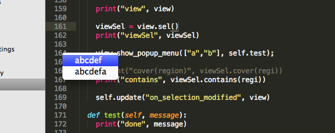

SublimeTextに選択式入力窓が付いたよ的な話
概要
ST3 build 3033 が出ました。
いやー全然気付かなかったんだけど、APIドキュメントとか更新されてたんですね。
http://www.sublimetext.com/docs/3/index.html
相変わらず
view.sel.contains(region)がboolではなくNoneを返してくるんだけど、
そのへんはまあそのうち変わるのかな。
→バグだったらしくfixされてた。
http://www.sublimetext.com/forum/viewtopic.php?f=6&t=12888
選択窓
EclipseとかIDEにあって、SublimeTextにずっとなかったもの、それが「選択窓」。
が、ついにST3で付いたようです。
まだ途中感溢れるんだけど、
こんな見た目

こんなコード
# 実行時に呼ばれる関数、resultには、成功時にindex、キャンセル時に-1が返る。
def test(self, result):
print("done", result)
# これで、2択が出る
view.show_popup_menu(["abcdef","abcdefa"], self.test);
んで、あとは関数内で、文字列を呼び出してどうこうすればいい、と。
上下キー、カーソル、STの入力追随の3つの方法で選択できます。
補完候補を、STの推論の外から持ってきておいて選ぶ、が出来ますねー。待ってました。
行動のトリガーにも出来るので、たとえば
テストコードの行頭を選んで、実行 とか選ばせるのを作ってみようと思います。
ラク！ 速い！ 軽い！！
牛丼みたい。
SublimeSocket for ST3
以前四国旅行中に手を入れてたんだけど、残すはview.selの問題のみです。
はー待ち遠しい。